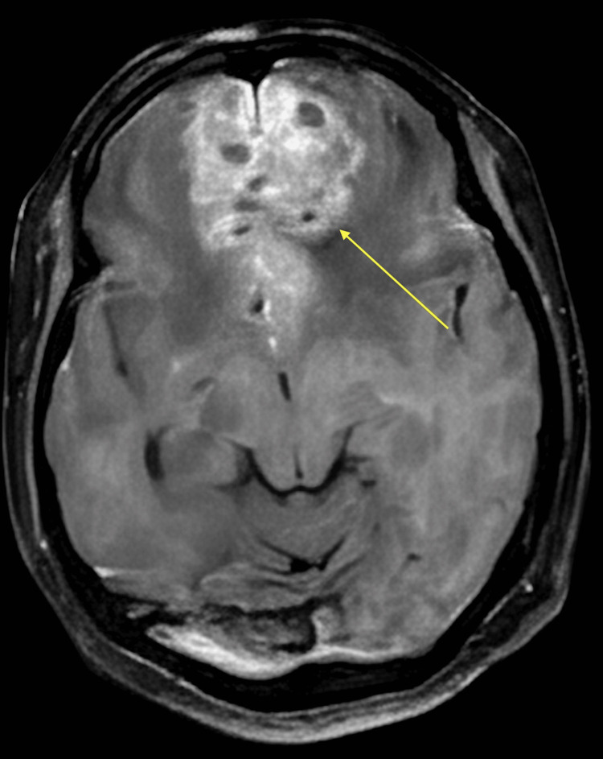
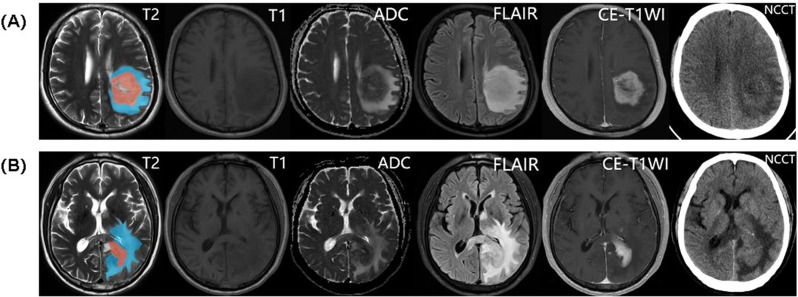
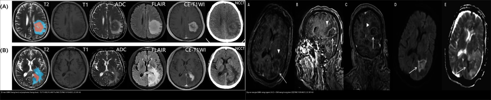
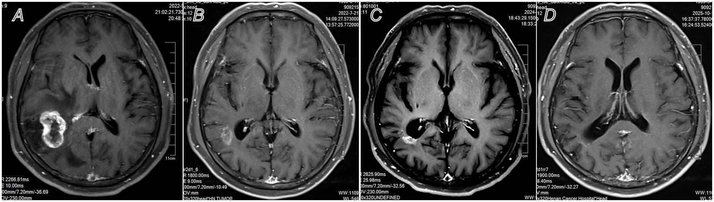
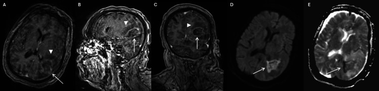

213 — U não: GBM bướm vs di căn vs lymphoma vs áp-xe / Brain tumors
Tags: pattern:u-nao vung:nao protocol:MRI-u-nao
Mức chắc chắn (certainty): tổng hợp y văn (literature synthesis) — nhóm tự biên từ y văn mở, chưa gắn ca nguyên văn đơn lẻ.
1. Tổng quan — hàng rào máu-não vỡ → bắt thuốc + tân mạch rCBV cao
- U thần kinh đệm độ cao (glioblastoma — GBM, WHO grade 4) hoại tử trung tâm + tân mạch (neovascularization) → bắt thuốc vòng dày gồ ghề + thể tích máu não tương đối (rCBV) > 1,75 + xâm lấn qua thể chai (corpus callosum) thành hình bướm (butterfly).
- TẠI SAO di căn nhiều ổ ở ranh giới chất xám-trắng: tắc vi thuyên tắc tại nơi mạch thu nhỏ đột ngột + phù vận mạch (vasogenic edema) hình ngón tay lan trắng rất rộng. U lympho hệ thần kinh trung ương nguyên phát (PCNSL) mật độ tế bào cực đặc → tăng tỷ trọng tự nhiên trên CT không tiêm (40–50 HU) và giảm tín hiệu trên T2W + hạn chế khuếch tán toàn bộ khối đặc. Áp-xe mủ đặc → hạn chế khuếch tán trung tâm + vòng mỏng đều + viền kép T2.
- Ngưỡng nằm lòng: GBM đường kính hay gặp > 40–50 mm khi phát hiện + phù lan > khối + rCBV > 1,75; di căn điển hình nhiều ổ 5–20 mm; lymphoma ADC cực thấp < 0,6–0,7 × 10⁻³ mm²/s (tương đương < 600–700 × 10⁻⁶ mm²/s).
2. Mẫu hình + chẩn đoán phân biệt theo vị trí (Gamut)
- Qua thể chai 2 trán (butterfly): GBM độ cao — xâm lấn chất trắng, hoại tử + bắt vòng.
- Nhiều ổ ranh giới xám-trắng + phù lớn: di căn (phổi/vú/melanoma/thận) — tìm u nguyên phát + PET.
- Quanh não thất bắt đồng nhất: lymphoma nguyên phát (người suy giảm miễn dịch) — đáp ứng steroid giả.
- Vòng mỏng + DWI trung tâm + sốt: áp-xe vi khuẩn — cấy máu + phổ (lactate).
- Trẻ + hố sau giữa: medulloblastoma/ependymoma/pilocytic — khác người lớn trên lều.
3. Bảng so sánh phân biệt (ma trận đối chiếu)
| Thực thể (entity) | Hình ảnh điển hình | Chốt vào (rule-in) | Chốt loại (rule-out) | Gợi ý xác nhận |
|---|---|---|---|---|
| GBM bướm | Qua thể chai 2 bên + vòng dày gồ ghề + hoại tử + rCBV > 1,75; trung tâm hoại tử KHÔNG hạn chế khuếch tán (DWI tối, ADC sáng); phổ MRS đỉnh Choline/NAA rất cao + Lactate/Lipid | Butterfly + hoại tử + xâm lấn trắng + DWI trung tâm tối | Trung tâm DWI sáng rực + viền kép → áp-xe | Sinh thiết + IDH/MGMT, MRI phổ (choline cao) |
| Di căn | Đa ổ ranh giới chất xám-trắng + phù vận mạch ngón tay rất rộng + vòng đều 5–20 mm | Nhiều ổ + K nguyên phát đã biết | Đơn ổ qua thể chai → GBM | Tìm nguyên phát (CT ngực/PET), SRS toàn não |
| Lymphoma (PCNSL) | Quanh não thất/thể chai + tăng tỷ trọng 40–50 HU trên NECT + giảm tín hiệu T2W + ngấm đồng nhất | Đồng nhất + quanh thất + ADC < 0,6–0,7 × 10⁻³ + T2 tối | Vòng hoại tử dày → GBM; chỉ ngấm vòng khi HIV/AIDS | Sinh thiết TRƯỚC steroid (steroid che mờ) |
| Áp-xe vi khuẩn | Vòng mỏng nhẵn (mặt hướng não thất mỏng hơn → dễ vỡ vào não thất) + trung tâm mủ DWI sáng rực/ADC tối đen + dấu viền kép (Dual-rim sign) trên T2W | Hạn chế trung tâm + viêm toàn thân + viền kép | Vòng dày gồ ghề + rCBV cao + DWI trung tâm tối → GBM | Dẫn lưu + kháng sinh, phổ lactate |

Khối trán 2 bên ~65 mm + hoại tử nang + phù lan, xâm lấn thể chai gối. Nguồn: Maity et al., Cureus 2026 Fig. 3, CC BY 4.0 — ca sa sút tiến triển nhanh, cần sinh thiết loại trừ lymphoma.
Mỗi hàng là T2, T1, ADC, FLAIR, T1 sau cản quang, NECT. (A) GBM: hoại tử trung tâm + ngấm vòng dày gồ ghề, ADC trung tâm hoại tử SÁNG (hoại tử không hạn chế khuếch tán). (B) Lymphoma (PCNSL): khối đặc, đồng nhất, ADC TỐI (mật độ tế bào cực cao — nước nội bào giảm) + phù FLAIR. Chốt phân biệt là đồng nhất + ADC tối vs hoại tử + ADC sáng. Nguồn: Yu F et al., Cancer Imaging 2026 (PMC13104201), CC BY 4.0.
Trái: u não — GBM (hoại tử, ADC sáng) vs lymphoma (đặc, ADC tối). Phải: áp‑xe giả u — ngấm vòng (A–C) + DWI trung tâm sáng rực (D) và T2 (E): ổ mủ đặc hạn chế khuếch tán. Cùng "vòng ngấm thuốc" nhưng DWI trung tâm là chốt loại trừ u. Nguồn: PMC13104201 + PMC13354021 (Rath TM et al., Cureus 2026), CC BY 4.0.
Di căn não đơn độc: nốt ngấm thuốc mạnh ở ranh giới chất xám–chất trắng, đáp ứng xạ phẫu lập thể (SRS). Nhiều ổ + phù vận mạch rộng + K nguyên phát đã biết = di căn. Nguồn: Liu X et al., Front Immunol 2026 (PMC13582613), CC BY 4.0.4. Protocol chụp + hệ phân độ/điểm chuẩn hóa
- MRI sọ não + gadolinium 3 mặt phẳng + DWI/ADC + tưới máu (rCBV) + phổ (MRS): vòng/đồng nhất, hoại tử, choline/NAA, lactate/lipid.
- Phân loại WHO 2021: IDH-wildtype + TERT/EGFR/+7/−10 = GBM ngay cả khi mô học thấp; MGMT methyl hóa → đáp ứng temozolomide tốt hơn.
- Đánh giá đáp ứng RANO 2.0: diện bắt thuốc 2 chiều + FLAIR + steroid + lâm sàng (giả tiến triển sau xạ cần theo dõi 12 tuần).
flowchart TD
A[Khối não bắt thuốc] --> B{Vòng hay đồng nhất?}
B -->|Vòng dày + bướm| C[GBM: sinh thiết + IDH/MGMT]
B -->|Nhiều vòng mỏng đều| D[Di căn: tìm nguyên phát]
B -->|Đồng nhất quanh thất| E[Lymphoma: sinh thiết trước steroid]
B -->|Vòng mỏng + DWI giữa| F[Áp-xe: dẫn lưu + KS]
5. Biến thể bình thường và cạm bẫy
- Giả tiến triển (pseudoprogression) sau xạ-hóa bắt thuốc tăng giả 12 tuần đầu — đừng mổ lại vội, theo dõi RANO + tưới máu.
- Steroid làm lymphoma nhỏ giả mất dấu sinh thiết — sinh thiết trước steroid.
- Nhồi máu bán cấp bắt thuốc vòng giả u — DWI vùng mạch + bối cảnh mạch máu phân biệt (bài 211).
- Mất myelin giả u (Tumefactive demyelination) — CẤM MỔ: dấu vòng ngấm thuốc hở (Open-ring sign) với phần hở hướng về phía chất xám vỏ não/hạch nền — đáp ứng corticoid, sinh thiết/mổ nhầm thành GBM là sai lầm chết người (hội chẩn MS/NMOSD bài 215).
- Viêm não herpes thái dương 2 bên giả u lan — sốt + PCR HSV + không tân mạch rCBV.
6. Tự lượng giá — Blind Quiz
Ca 1 — Sa sút tiến triển nhanh + khối trán lan 2 bên. Nhìn MRI trước.
- Gợi ý lâm sàng (clinical context): người lớn tuổi, sa sút nhanh + thay đổi nhân cách, không sốt, không K đã biết.
- Câu hỏi: Mô tả dấu hiệu (finding) chính? Đưa 3 chẩn đoán phân biệt (differential)? Dấu hiệu nào chốt (clincher)?
Bấm để hiện đáp án (findings + chẩn đoán)
- Dấu hiệu (findings): khối trán 2 bên ~65 mm qua thể chai gối (butterfly) + hoại tử nang đa ổ + phù lan + bắt thuốc không đều (mũi tên).
- Chẩn đoán (diagnosis): nghi glioblastoma bướm (butterfly GBM) — vì qua thể chai + hoại tử + tân mạch (khác lymphoma đồng nhất quanh thất, di căn nhiều ổ nhỏ).
- Nguồn ảnh: Maity et al., Cureus 2026 Fig. 3, CC BY 4.0 (ca giả sa sút, cần sinh thiết + IDH/MGMT).
Ca 2 — Nhiều nốt 8–15 mm ranh giới xám-trắng + phù lớn + K phổi đã biết. Nhìn ảnh:
- Câu hỏi: GBM hay di căn? Xử trí?
Bấm để hiện đáp án (findings + chẩn đoán)
- Dấu hiệu (findings): nốt ngấm thuốc mạnh ở ranh giới chất xám–trắng, phù vận mạch quanh; bối cảnh K nguyên phát đã biết.
- Chẩn đoán (diagnosis): di căn não — xạ phẫu lập thể (SRS)/toàn não + điều trị nguyên phát (khác GBM đơn ổ bướm). Nguồn: Liu X et al., Front Immunol 2026 (PMC13582613), CC BY 4.0.
Ca 3 — Khối quanh não thất bắt đồng nhất + ADC 520, chưa dùng steroid. Nhìn 2 hàng ảnh (A: trên, B: dưới):
- Câu hỏi: Hàng nào là lymphoma? Dấu hiệu nào chốt? Bước tiếp cấm kỵ gì?
Bấm để hiện đáp án (findings + chẩn đoán)
- Dấu hiệu (findings): hàng dưới (B) đặc, đồng nhất, ADC TỐI; hàng trên (A) có hoại tử trung tâm + ADC sáng.
- Chẩn đoán (diagnosis): lymphoma nguyên phát (B) — sinh thiết TRƯỚC steroid (steroid làm khối teo giả, mất chẩn đoán). Nguồn: Yu F et al., Cancer Imaging 2026 (PMC13104201), CC BY 4.0.
Ca 4 — Sốt + ổ ngấm vòng, đang điều trị nhiễm khuẩn. Nhìn vòng ngấm (A–C) và DWI (D):

- Câu hỏi: Đây là u hay áp‑xe? Dấu hiệu nào phân biệt với GBM? Xử trí?
Bấm để hiện đáp án (findings + chẩn đoán)
- Dấu hiệu (findings): ổ ngấm vòng (A–C) nhưng DWI trung tâm SÁNG rực/ADC tối (D) = mủ đặc hạn chế khuếch tán, khác hoại tử trung tâm ADC sáng của GBM.
- Chẩn đoán (diagnosis): áp‑xe não (giả u độ cao) — dẫn lưu + kháng sinh, không xạ trị/sinh thiết mù. Nguồn: Rath TM et al., Cureus 2026 (PMC13354021), CC BY 4.0.
Bài liên quan chéo
- 200 – Tổng quan Thần kinh
- 211 – Đột quỵ não (DWI giả u)
- 212 – Xuất huyết sọ (máu trong u)
Không dùng để chẩn đoán độc lập khi chưa có người hướng dẫn.